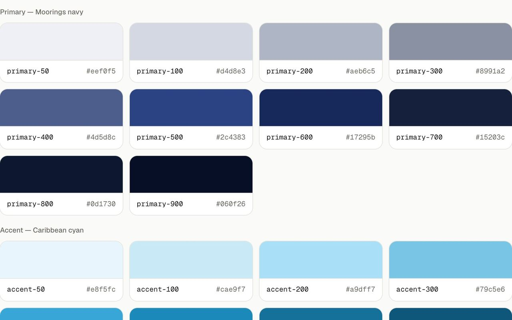
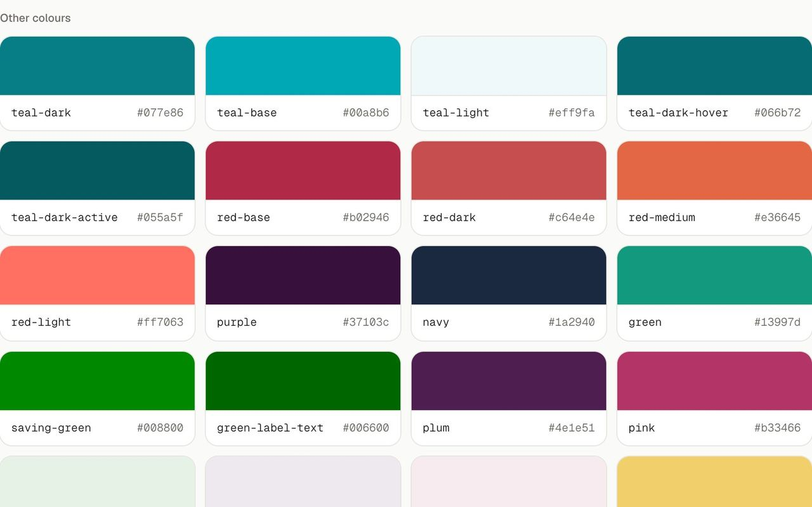

Helix
Travelopia is a parent company of specialist travel brands, each with its own site, team and design system. The Moorings and Sunsail sell yacht charters; Le Boat and Emerald Star sell canal holidays. Those four are mine as designer.
Helix is where the design system lives now: tokens, components, layouts and explorations, rendered from each brand's own repository and shared as a link. Ten brand teams use it instead of Figma.

One workspace, every brand's own system
Helix installs into a brand's Next.js repository and renders what is already in it. Folders become navigation. Every specimen, layout and exploration is a URL, opened with nothing installed. Before it, a design was a picture handed to an engineer, and the picture and the build drifted apart.
Helix holds no brand. Each install reads its brand's own token stylesheet and draws the palette, type, spacing and radius from it, so every workspace looks like its brand and works like all the others. A new brand is an install, not a project. Nine brands have built their systems in it so far.


What I obsessed over
The design-system page has no content of its own. It reads the brand's token stylesheet at request time and draws the ramps, the semantic set, the type scale and the spacing from it. There is nothing to publish and nothing to keep in step, so the page cannot tell you something the code does not.
Appearance sits on top: light and dark, and five accents, each a pair that clears AA as text on every surface. The accent from the original artboard measured 3.4 to 1, so it was replaced rather than shipped.

A component has a page, not a card
Each component gets its specimen in a frame, its props read off the type with the JSDoc and the defaults, and every file that imports it. Owner, file and last change come from git. Nothing on it is written by hand, so it is right on the day someone reads it.

The preview, which exists because of review calls
Sign-off happens on a shared screen, and four minutes in, somebody asks what it does on a phone. So the preview opens both at once. Four fixed widths, not a draggable handle, so every reviewer sees the same page. Sync scroll on by default. The exact size and zoom written on the frame. The variant switcher inside the page. Width and variant in the URL, so the link in the recap reopens on exactly what the room saw.

Comments, the toolbar and the skills
Feedback on a design used to need a paid seat on the hosting provider, $205 each, for anyone who wanted to say "move this 8px". I built the comment layer into the workspace: pinned to the element, images and links, one sign-in. Eight brand teams run it.
Then the dock: ten tools on the real page, Comments first, then Annotate, Inspect, Changes, Snap and the rest, each answering one complaint. And fourteen skills that build the system, on Claude Code and OpenCode from one source, with one rule that stops any of them running alone. A designer gets from access to a first exploration on main in under an hour.